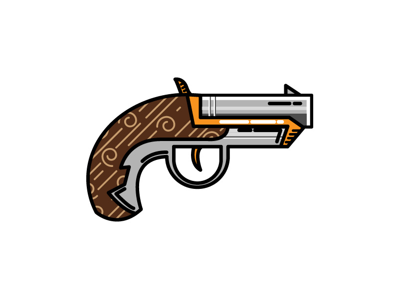
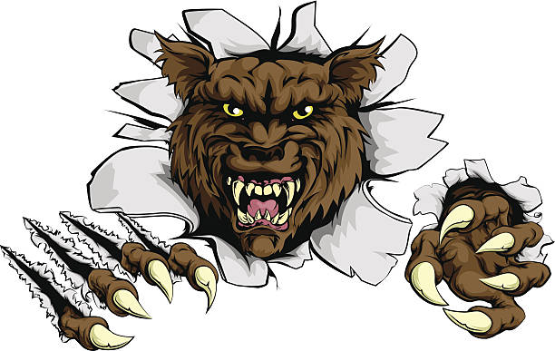
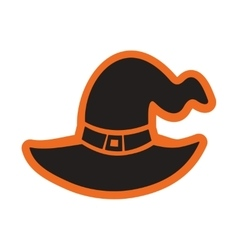
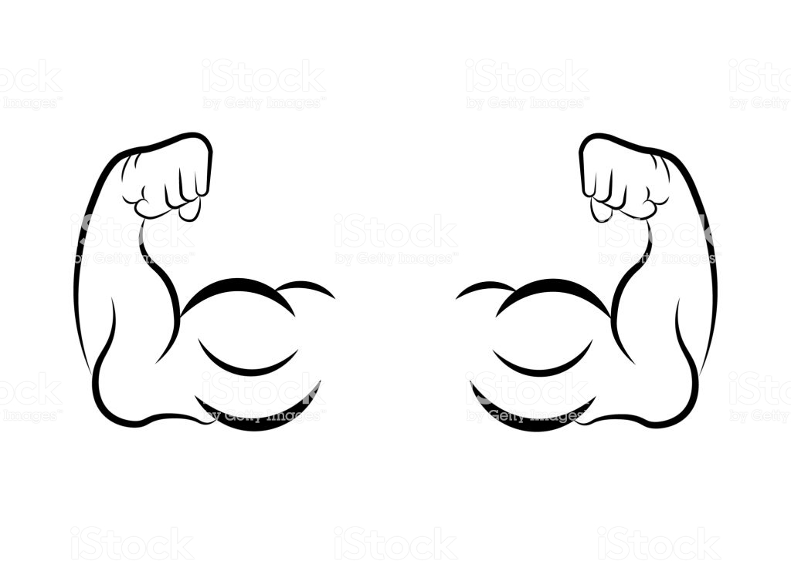
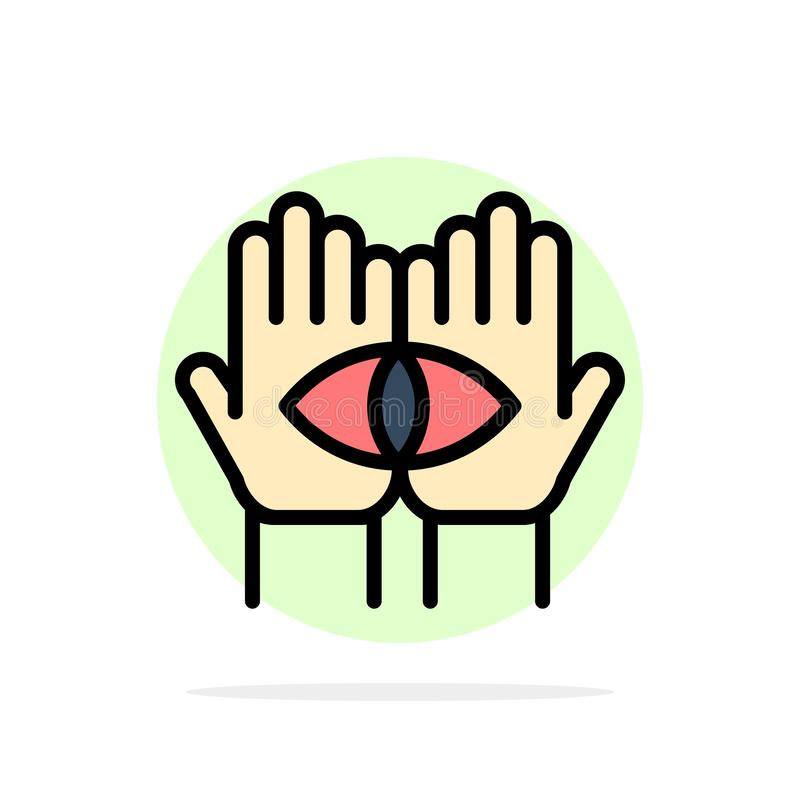
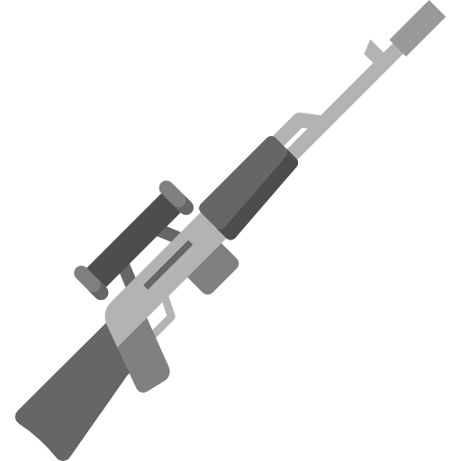
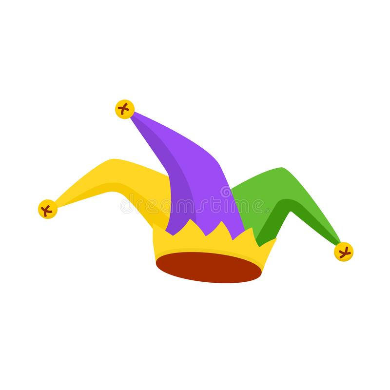

|
Dân Làng (Villager) Bạn là một dân làng bình thường và không có khả năng gì đặc biệt. Phe: Dân làng |
Ma Sói ( Werewolf) Chọn một người để giết mỗi đêm. Phe: Ma sói |
 Xạ Thủ (Gunner) Bạn có 2 viên đạn để xử tử kẻ khác.Vì tiếng súng rât lớn nên vai trò của bạn sẽ lộ ra sau phát súng đầu tiên. Phe: Dân làng |
Sói Đầu Đàn (Alphawerewolf) Bạn là Ma Sói bình thường, ngoại trừ việc bạn có phiếu bầu gấp đôi trong đêm. Phe: Ma sói |
Tiên Tri (Seer) Mỗi đêm bạn có thể xem vai trò của người chơi khác. |
 Sói Điên Cuồng (Werewolfberserk) Một lần trong trò chơi, bạn có thể thông báo rằng có một ma sói "điên cuồng" trong ngày. Nếu trong đêm nạn nhân đã chọn của bạn đang được bảo vệ, tất cả những người bảo vệ nạn nhân của bạn sẽ chết. Phe: Ma sói |
Bảo Vệ (Bodyguard) Chọn một người chơi đề bảo vệ mỗi đêm. Người chơi không thể bị giết vào đêm đó, thay vào đó bạn sẽ bị tấn công thay người đó. Vì bạn rất khỏe nên sẽ không thể bị chết trong lần tấn công đầu tiên nhưng sẽ chết trong lần tấn công thứ hai. Phe: Dân làng |
 Phù Thủy (Witch) Bạn có 2 bình thuốc: Một bình dùng để giết và bình kia để bảo vệ người chơi. Bình bảo vệ chỉ được tiêu thụ nếu người chơi đó bị tấn công.Bạn không thể giết trong đêm đầu tiên. Phe: Dân làng |
Bác Sĩ (Doctor) Chọn một người chơi để che chở vào mỗi đêm. Người chơi đó sẽ không bị giết vào đêm đó. Phe: Dân làng |
|
 Lực Sĩ (Tough guy) Mỗi đêm bạn có thể chọn 1 người để bảo vệ.Nếu bạn hoặc người chơi đó bị tấn công, cả 2 sẽ không chết và bạn sẽ thấy được vai trò của kẻ tấn công. Bởi vì vết thương của bạn, bạn sẽ chết vào cuối ngày tiếp theo. Phe: Dân làng |
 Thầy Đồng (Medium) Vào ban đêm bạn có thể nói chuyện ẩn danh với người chết. Bạn có 1 lần hồi sinh người khác. Phe: Dân làng |
 Thiện Xạ (Marksman) Vào ban đêm, bạn có thể đánh dấu một người chơi là mục tiêu của bạn. Sau ngày hôm sau, bạn có thể giết hoặc thay đổi mục tiêu của mình. Nếu bạn cố gắng giết một dân làng, phát bắn của bạn sẽ gây tác dụng ngược và giết chết bạn. Bạn có hai mũi tên. Phe: Dân làng |
 Thằng Khờ (Fool) Bạn phải lừa dân làng treo cổ bạn. Nếu họ treo cổ bạn, bạn thắng. Phe: Solo |
|---|
 Thần Tình Yêu (Cupid)
Trong đêm đầu tiên bạn có thể chọn hai người chơi đề họ làm tình nhân của nhau. Bạn thắng nếu phe dân làng thắng hoặ cặp tình nhân là những người sống sót cuối cùng.
Phe: Dân làng hoặc Cặp đôi
Thần Tình Yêu (Cupid)
Trong đêm đầu tiên bạn có thể chọn hai người chơi đề họ làm tình nhân của nhau. Bạn thắng nếu phe dân làng thắng hoặ cặp tình nhân là những người sống sót cuối cùng.
Phe: Dân làng hoặc Cặp đôi